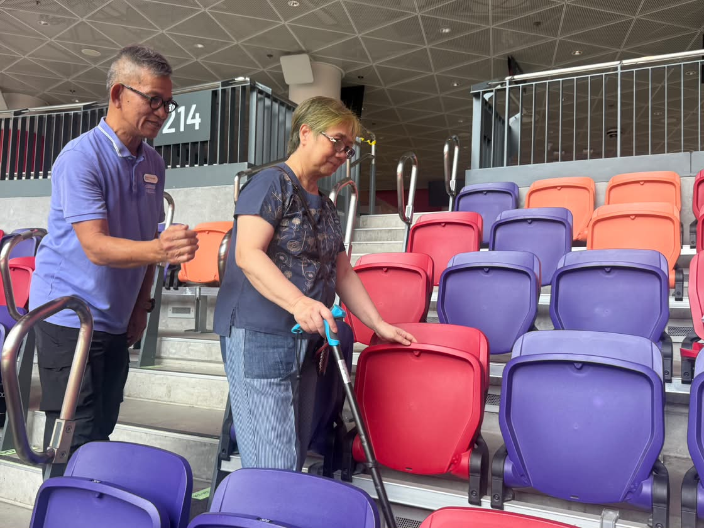
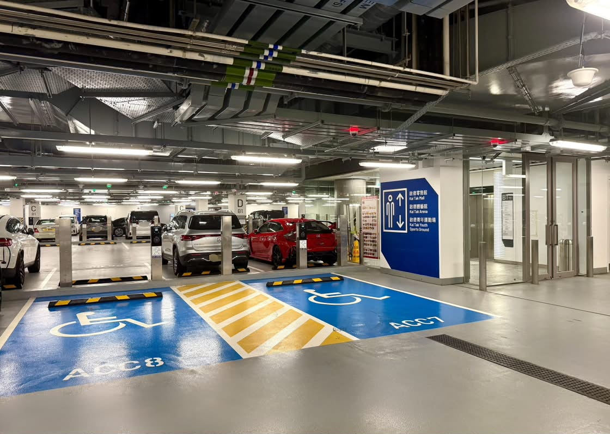
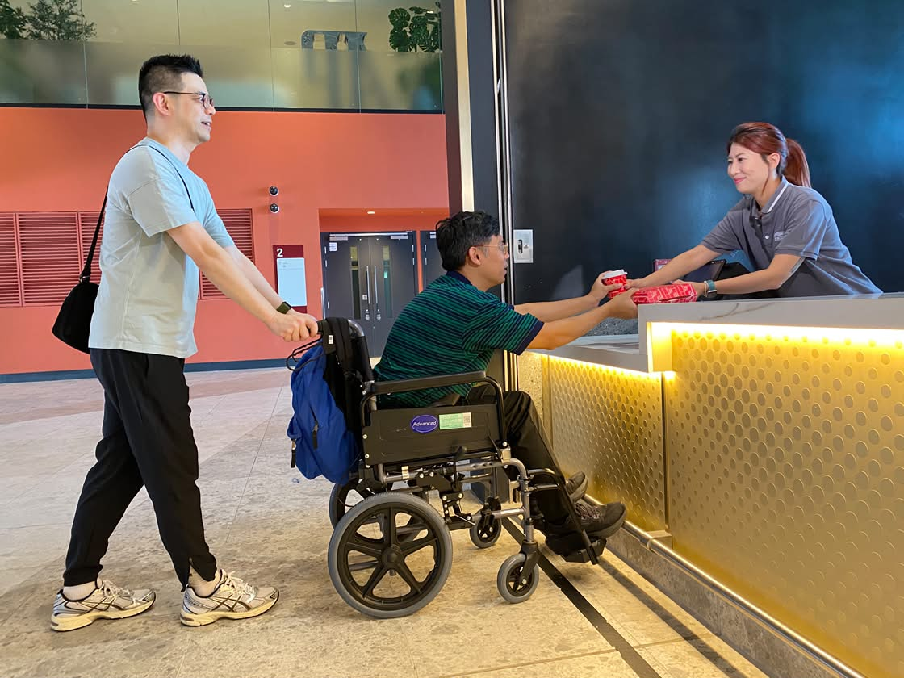

others2026-10-17 13:35 · 啟德體育園
啟德體育園奪平機會通用設計金獎 無障礙盛事體驗獲肯定
啟德體育園榮獲平機會「通用設計嘉許計劃2026/27」金獎及特別嘉許大獎，肯定佢喺規劃、設計同營運上全面實踐通用設計理念。體育園自2025年3月開幕以嚟搞咗超過170項盛事，場內設輪椅座位連充電電源、點字地圖、觸覺引路徑、感應環路系統等，照顧唔同需要嘅訪客。
作為香港最大型嘅綜合體育及休閒娛樂新地標，啟德體育園自2025年3月開幕以嚟，已經舉辦超過170項國際及本地體育、文化娛樂盛事，包括香港國際七人欖球賽、世界級足球賽事、第十五屆全國運動會香港賽區賽事，以及多場巨星演唱會，吸引數以百萬計觀眾入場。三大場館設有輪椅座位及陪同者座位，部分位置更有充電電源方便電動輪椅使用者；亦都照顧視障人士需要，設點字地圖、觸覺引路徑、凸字座位編號，仲有感應環路系統、FM調頻接收系統等，連祈禱室都有埋。


資料來源：啟德體育園新聞稿（13/10/2026）；相片由啟德體育園提供。